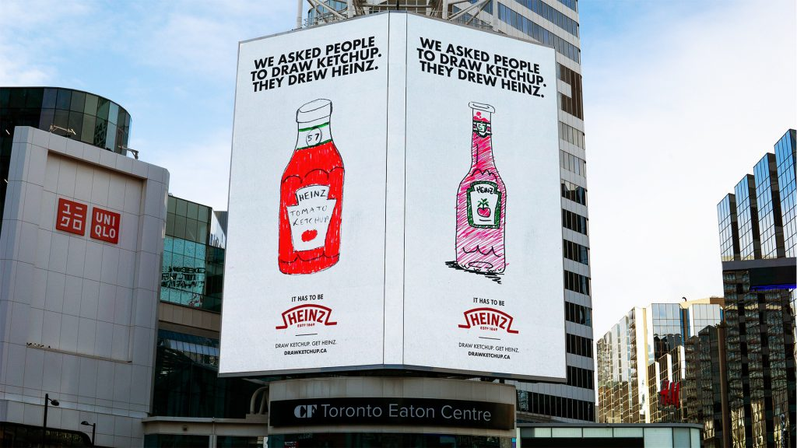

Date : february 2022 Concept : we wanted to create a statement about the monopoly that heinz has in the market whilst creating an emotional connection and proving it to the audience . Features: it was a social experiment that was conducted in more than 18 countries. Script : as mentioned this was to create a connection with the audience . Not knowing that they were taking part in the campaign ,people were asked anonymously to draw a bottle of ketchup. Every single drawing came back with the logo of Heinz on it. That is where the slogan got its name from ; “When you think of ketchup you think of Heinz”.
